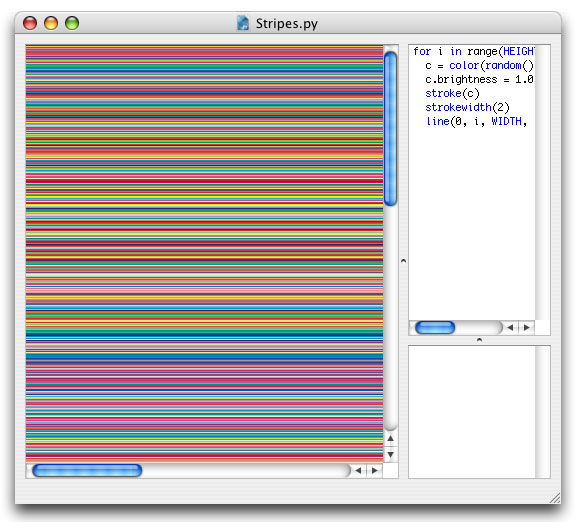
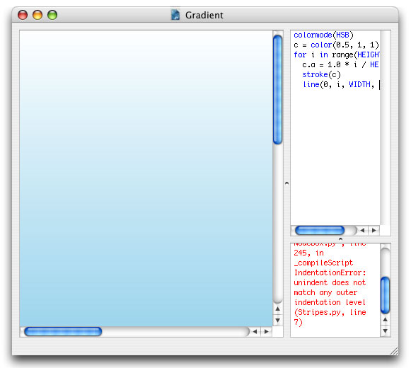

Color
Colors returned from the color() command in NodeBox have a few useful attributes that allow you to think in different color spaces at the same time. For example, if we wanted to draw a grid of lines in random colors, we would use the following code:
for i in range(HEIGHT): c = color(random(), random(), random()) stroke(c) strokewidth(1) line(0, i, WIDTH, i)
However, since each line now has a random stroke, some lines will tend to look dull and light. To crank up the colors, we can easily adjust the lines' saturation without switching to a different color space. For the same reason, a stroke width of two is used instead of one, overlapping the lines makes them appear brighter as well.
for i in range(HEIGHT): c = color(random(), random(), random()) c.saturation = 1.0 stroke(c) strokewidth(2) line(0, i, WIDTH, i)

Color attributes
Colors returned from the color() command (or the fill() or stroke() command for that matter) have the following attributes:
- color.r: the RGB red component
- color.g: the RGB green component
- color.b: the RGB blue component
- color.a: the alpha component
- color.c: the CMYK cyan component
- color.m: the CMYK magenta component
- color.y: the CMYK yellow component
- color.k: the CMYK black component
- color.hue: the HSB hue component
- color.saturation: the HSB saturation component
- color.brightness: the HSB brightness component
All of these can be used at any time in the script, NodeBox calculates the exact color.
CMYK output?
But then what colorspace is used for output? In whatever way you use a colormode() in your script, the output adhers to outputmode(). This makes it easy when working with print documents as you don't need to worry about the technical details, but can instead focus on the colors you like. Keep in mind that not all RGB colors are printable though.
Colors are stored in the graphics state
NodeBox remembers the last color you defined, and keeps on using that fill or stroke color, until you define a different one.
Harmonious colors
The trick to generating harmonious and consistent colors is not to make them entirely random, but limit them to a certain range. A common pitfall is to use ALL of the colors, since, we can. But often this does not generate consistent design.
The HSB color mode is excellent to create color harmony.
Consider the following example:
colormode(HSB) nofill() for i in range(10): c = color(0.5, random(0.5), random(0.5,1.0)) stroke(c) strokewidth(random(50)) radius = random(200) oval(random(WIDTH), random(HEIGHT), radius, radius)
The hue is always the same, 0.5 or a hue of 180, which is cyan. Only the saturation and brightness are varied a bit. This ensures we always have shades of blue, so they all fit together. Saturation is limited between 0.0 and 0.5, for a faded look. The brightness is furthermore limited between 0.5 and 1.0 (fifty to a hundred percent) so we get bright colors. Take a look at the Colors library which has excellent support for these kind of "color ranges".
Gradients
You can create gradients in NodeBox by drawing lines in a for-loop and increasing the transparency of each line. In the example below color c's alpha transparency ranges from 0.0 to 1.0 (notice how we multiply by 1.0 to get a floating point number).
colormode(HSB) c = color(0.5, 1, 1) for i in range(HEIGHT): c.a = 1.0 * i / HEIGHT stroke(c) line(0, i, WIDTH, i)

The Colors library has a handy gradient command that handles more complex gradients.